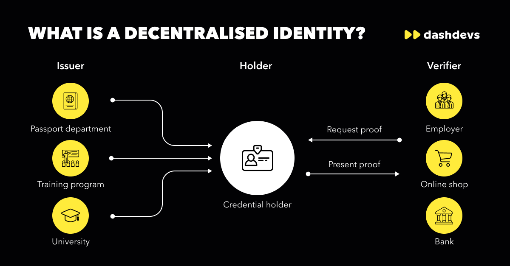

Bridging The Gap of Identity: Decentralized Identities for a More
Inclusive Africa.
In the digital age, the question of identity has taken on new
dimensions. As individuals navigate the virtual world, their identities
serve as both passports and vulnerabilities. The number of
interconnected devices in these deployments, their placement in the
environment, often widely accessible, their typically unattended
operation, and the sheer volume of data produced makes them susceptible
to malicious attacks and unauthorized access [1], emphasizing the need
for robust protection. Specifically, 112.24 million
Internet of Things (IOT)
attacks were encountered in [2]. Decentralized identity (dID) systems,
which encompass a broader set of principles for managing digital
identities in a decentralized manner, offer a promising approach to
addressing these concerns. By empowering individuals with greater
control over their personal data and identity information, dID systems
reduce reliance on centralized identity providers.
In many parts of the world, having an identity is something we take for
granted. It's just a basic part of our everyday lives, something we
use to access services, travel, and participate in society. But in
Africa, millions of people are still living without any form of
identification. This lack of identity leaves them unable to access
essential services, education, healthcare, and even the right to vote.
According to the World Bank, an estimated one billion people around the
world are living without any form of identification. In Sub-Saharan
Africa alone, that number is believed to be around 500 million. This
lack of identity not only affects individuals, but it also has a
significant impact on the economic development of the continent as a
whole.
This article aim to demystify decentralized identities and why they are
important in Africa.
Evolution of Identities
Since the dawn of civilization, proving who we are has been fundamental.
From cave paintings to clay tablets, the way we identify ourselves has
evolved along side society. Today, in the digital age, our identities
are once again undergoing a transformation. To understand decentralized
identities, it is pertinent to review other models of identities. The
models for online identity have advanced through four broad stages since
the advent of the Internet: centralized identity, federated identity,
user-centric identity, and decentralized identity.
Centralized Identity (Administrative Control by a single Authority)
In real world scenarios, the identification of individual was
traditionally facilitated by centralized identities, usually government
bodies which were responsible for the creation, modification,
verification, and revocation of such identities. The continuity of the
pattern of centralized identity management persisted with the advent of
the Internet, compelling users to manage multiple identities to access
different websites or online services. Organizations such as Internet
Assigned Numbers Authority (IANA) [3], Internet Corporation for Assigned
Names and Numbers (ICANN) [4], and certificate authorities (CAs) [5]
were established to validate IP addresses, mediate domain names, and
assist e-commerce sites in verifying their identity.
Unfortunately, granting control of digital identity to centralized
authorities of the online world suffers from the same problems caused by
the state authorities of the physical world, users are locked in to a
single authority who can deny their identity or even confirm a false
identity. Centralization innately gives power to the centralized
entities, not to the users. As the Internet grew, as power accumulated
across hierarchies, a further problem was revealed, identities were
increasingly balkanized. They multiplied as web sites did, forcing users
to juggle dozens of identities on dozens of different sites while having
control over none of them.
Federated Identity (administrative Control by multiple, federated
authorities)
The initial breakthrough in digital identity was federated identity it
is a system of mutual trust established among multiple organizations or
online entities, allowing users to use a single digital identity across
various websites or services. Allows authorized users to access multiple
applications and domains with a single set of credentials like when
people can use their Google or Facebook to sign into websites or apps.
Microsoft's Passport (1999) initiative was one of the first. It
imagined federated identity, which allowed users to utilize the same
identity on multiple sites. However, it put Microsoft at the center of
the federation, which made it almost as centralized as traditional
authorities.
In response Sun Microsoft organized the Liberty Alliance (2001). They
resisted the idea of centralized authority, instead creating a “true”
federation, but the result was instead an oligarchy:, the power of
centralized authority was now divided among several powerful entities.
The failure of federated identity can be pinpointed to the fact that
even though users have gained some level of control over their digital
identity, this control is still subject to the authority of the
federated entity and could potentially be revoked at any time.
Federation improved on the problem of balkanization, users could wander
from site to site under the system. However, each individual site
remained an authority.
User-Centric Identity (individual or administrative control across
multiple authorities without requiring a federation)
The concept of user-centric identity marked a significant step towards
recognizing the necessity of decentralized identities . User-centric
methodologies prioritized user consent and interoperability. Projects
linked to this form of digital identity envisioned that, eventually,
each person would be able to manage their digital identity. According to
Motykowski et al. [6], during the Internet Identity Workshop in 2005,
the concept of User-Centric Identity was introduced with the objective
of developing an identification method that would be continuous and not
subject to reassignment to a different user, unlike email addresses or
phone numbers. The concept of User-Centric Identity marked a significant
step toward recognizing.
It is worth noting that the concept of User-Centric Identity was
initially proposed by the Augmented Social Network (ASN), circa 2000.
This is documented in the white paper by Jordon et al. [7]. Although the
exact term is not mentioned, they proposed incorporating a persistent,
online identity as an integral part of the Internet's architecture.
The work of the IIW has supported many new methods for creating digital
identity, including OpenID (2005), OpenID 2.0 (2006), OpenID Connect
(2014), OAuth (2010), and FIDO (2013). As implemented, user-centric
methodologies tend to focus on two elements: user consent and
interoperability. By adopting them, a user can decide to share an
identity from one service to another and thus debalkanize his digital
self.
OpenID offers an example. A user can theoretically register his own
OpenID, which he can then use autonomously. However, this takes some
technical know-how, so the casual Internet user is more likely to use an
OpenID from one public web site as a login for another. If the user
selects a site that is long-lived and trustworthy, he can gain many of
the advantages of a self-sovereign identity ,but it could be taken away
at any time by the registering entity. It's central authorities all
over again. Worse, it's like state-controlled authentication of
identity, except with a self-elected “rogue” state. In other words,
being user-centric isn't enough.
Decentralized Identity (individual control across any number of
authorities)
Image if; you could onboard every new customer with 1 click, each of
your customers had a secure, direct connection to you, you could
instantly verify that every customer is genuine, your customers never
needed a username and password. , you never had any more fraudulent card
payments, you could send every customer verifiable digital receipts.
Look no further a seismic change is underway. The way we think about and
use digital identity is transforming, touching every aspect of digital
life. Enter “Decentralized Identity”.
Decentralized identification is a technology that is handled with the
help of all participants. It has a different architecture compared to
centralized and federated identification services. There is no single
organization inside to manage identification [8]. Usually, a
decentralized identifier works in a peer-to-peer network, such as
Distributed Ledger Technology and Distributed Hash Table. Decentralized
identification systems are formed by many nodes that can be users,
organizations, issuers, and validators. Self-sovereign identity systems
represent a kind of this system. They operate to manage digital
identities where the users themselves manage attributes. Unlike
traditional identity systems, DIDs are based on privacy, security, and
efficiency principles. They aim to provide a decentralized and
interoperable identity ecosystem that can be used across various
industries and services.
On the other hand, decentralized approaches not relying on any
centralized Identity provider. In contrast with traditional,
centralized, and federated approaches that are account-based or digital
certificate-based and require entities, e.g., users to trust and rely on
identity providers, the latter is based on peer-to-peer relationships
between interacting parties. Hence, the ecosystem consists of various
entities that enact roles formerly performed by central authority [8].
It enhances decentralization, transparency, and user control [9] in
transactions involving identity information. And usually relies on some
form of decentralized ledger technology (DLT), blockchain, distributed
file system, or another de centralized system, such as Hash graphs and
Tangle [10].
Open-source Hyperledger projects can also be used, as Hyperledger Indy
was specifically built for the implementation of decentralized identity.
Thus can be used standalone or with other blockchains [11][12]. The use
of blockchain is the most popular, however not mandatory for the
implementation of decentralized identity as it can also be achieved with
mentioned alternatives [13]. Nevertheless, blockchain may facilitate the
implementation of decentralized identity, and it coincides with some
desirable properties of Self Sovereign Identity [14].
The transition from centralized to decentralized identities signifies a
significant advancement in digital identity management, improving user
privacy, security, and empowerment. While centralized systems rely on
conventional password-based authentication, decentralized systems can
employ sophisticated methods like
Zero-Knowledge Proof (ZKP), allowing users to authenticate their identity without disclosing
extra information, thereby enhancing privacy.
Elements of Decentralized Identities
Two technical concepts that are an essential part of most
blockchain-based identity approaches are Decentralized Identifiers
(DIDs) and Verifiable Credentials (VCs). Both are currently being
developed by the World Wide Web Consortia (W3C), which also illustrates
the ongoing standardization efforts around Decentralized identity
management. [15, 16].
Decentralized Identifiers (DID)
The DID is a new type of globally unique digital identifier associated
with a subject and a DID document [17]. The subject, which is normally
called “DID subject,” refers to the entity that this DID identifies. The
DID subject could be anything, such as people, organization, thing or
digital information, so it satisfies the need for industrial Internet
and Internet of Things IoT requirements. The DID document is a set of
data describing the DID subject, including the DIDs, the public keys,
and the services endpoints relevant to the subject. The DID points to
the DID document, and the DID document contains the information of the
DID subject, [17].
Unlike the other digital identity systems, which have distinct hierarchy
frameworks, the DID builds a direct relationship between subjects and
blockchains. Initially, anyone or anything with the proper software can
generate a DID, and begin using it immediately without requiring the
authorization or involvement of any centralized registration authority.
This is the same process used to create public addresses on the Bitcoin
or Ethereum or other popular blockchains. Meanwhile, the DID document
records the way how this DID is created and its only controller.
Finally, both DID and DID document are stored in the blockchain, which
makes the DID self-controlled and decentralized. Basically, the DID is a
string, and it is randomly generated according to encryption algorithm
and software, not dependent on the issuance and authorization of
authority. The DID is pretty much similar to a bitcoin address, but it
has more properties as follows [19];
(i) Permanent . Once the DID is created, it can never be
changed, since it is recorded in the blockchain or other distributed
ledgers
(ii) Resolvable . Since the DID is pairwise with a DID
document, which contains the metadata of the subject, everyone could
look it up to discover the metadata of the DID.
(iii)Verifable. A DID is associated with one public/
private key pair, the controller of the private key can prove that
they are the only owner of the DID. On the contrary, anyone could
verify this DID to ensure it belongs to the real controller.
(iv) Decentralized. Te cryptography mechanism eliminates
the need for centralized registration authorities, the kind of system
needed for almost every other global identifier systems we use. DID
and DID document could be store in blockchain, which play the role as
the trust anchor, and it exactly realizes the decentralized feature of
this new type identifier
Verifiable Credentials (VC)
The verifiable credentials (VC) are one of the most important elements
of SSI, and it is the manifestation of DID. The W3C verifiable
credential data model v1.1 illustrates that “Credentials are a part of
our daily lives; driver's licenses are used to assert that we are
capable of operating a motor vehicle, university degrees can be used to
assert our level of education, and government issued passports enable us
to travel between countries” [19], while verifiable credentials are
digital credentials that are closely related to DID and provide
authentication for a decentralized identity. Verifiable Credentials
contain 3 main components [19, 20]:
(i) Metadata:Issued with the issuer's cryptographic
signature. “describe attributes of the credential, such as the issuer,
the expiration date and time, a representative image, a public key to
use for verification purposes, the revocation method, and so on” [19].
(ii) Claims: A declaration that is made on a topic. For
instance, the statement that “Alice's date of birth is January 1,
1990.”
(iii) Proofs: A proof is data about yourself that
enables other people to verify the source of the data, check that the
data belongs to you, that the data has not been tampered with, and
finally, that the data has not been revoked by the issuer. A proof is
also known as an identity document or an identity credential
Fundamentally, instead of identities being composed of accounts or
identifiers that are “borrowed” from providers, DID gives the controller
the right to possess digital identities. As DIDs are more broadly
adopted across the web, they give rise to a more resilient Internet,
where digital identity is not borrowed from a provider, the way domain
names and social media accounts are, but rather controlled by a
controller and thus the basis of a new kind of verifiable digital trust.
This makes the Internet not only a more reliable tool but a more robust
platform for creating richer digital experiences [21]. Nevertheless, DID
has been a hot topic in worldwide, just like the concept of blockchain,
and there are remarkable implementations, pilots in different industrial
areas, but whether it will bring revolutions both in social and economic
remain to be seen.

Decentralized identity for a more Inclusive Africa
In Africa, a staggering number of individuals remain without legal
identification. According to World Bank data, this number reaches nearly
half the continent's population, translating to around 500 million
people. This lack of legal identification becomes a severe hurdle when
these individuals attempt to access crucial services such as education,
healthcare, banking, and even participation in electoral processes.
Children turned away from schools without proper registration. Families
evicted from generations-old lands with no titles. Aspiring
entrepreneurs blocked from formal loans lacking verified identities.
Even innocent prisoners languishing in jail unable to prove citizenship
status after arrests.
This predicament presents a significant impact on the region's
economy. According to a study by the McKinsey Global Institute,
Africa's economic value could surge by $5.7 trillion by the year
2025 if it fully digitized financial services. However, such a digital
transformation heavily depends on having a reliable and verifiable
digital identity system in place.
Thus, as connectivity penetrates all corners of the continent via mobile
devices, decentralized digital identities present a monumental
opportunity to credential the marginalized using embedded cryptography,
public-key infrastructure, and self-sovereign identity principles. Those
lacking state-sanctioned identity documents can claim verifiable
personal data ownership restored. The exciting potentials for inclusion
abound! Blockchain-enabled digital IDs operate independent of
centralized authorities like governments, banks or aid agencies. Rather
identity credentials get stored on distributed ledgers secured by
encryption. This allows marginalized people to correctly own and control
sensitive personal records--birth data, fingerprints, land deeds etc.
While selective sharing access keys to such documentation only when
required for receiving services. Power dynamics flip toward the people.
Challenges of Establishing Digital Identity In Africa
Establishing reliable digital identity systems in Africa is challenging
due to various factors. Limited infrastructure, illiteracy, and cultural
barriers contribute to the difficulties in capturing and verifying
identity information. Additionally, the lack of interoperability among
different identity systems creates barriers to seamless identity
verification across sectors and regions.
One of the major challenges in establishing digital identity in Africa
is the limited infrastructure. Many rural areas lack access to reliable
internet connectivity and electricity, making it difficult to implement
digital identity systems. Without the necessary infrastructure,
individuals in these areas face significant barriers in accessing and
benefiting from digital services. Illiteracy also poses a significant
challenge in establishing digital identity. In some regions of Africa,
the literacy rate is low, making it challenging for individuals to
understand and navigate digital identity systems. This lack of literacy
can hinder the adoption and usage of digital identity, limiting its
potential impact on financial inclusion and socio-economic development.
Cultural barriers further complicate the establishment of digital
identity systems in Africa. Different cultural norms and practices may
affect individuals' willingness to share their personal information
for identity verification purposes. Building trust and addressing
privacy concerns are crucial in overcoming these cultural barriers and
ensuring the successful implementation of digital identity systems.
Despite these challenges, efforts are being made to address the current
digital identity landscape in Africa. Governments, international
organizations, and private sector entities are collaborating to develop
innovative solutions that can overcome the infrastructure, literacy, and
cultural barriers. By promoting digital literacy, investing in
infrastructure development, and fostering cross-sector collaboration,
Africa can unlock the full potential of digital identity and drive
inclusive socio-economic growth.
Decentralized Identities Initiative By Some Selected African Countries
Governments in Africa play vital roles in spearheading the expansion of
digital ID adoption across the continent with the support from
international initiatives such as World Bank's Identification for
Development Initiative (ID4D). They take charge of extensive ID
registration, ensuring that citizens can readily access official digital
identities. While we've seen notable progress in this regard, there's
still work to be done, especially when it comes to establishing a
comprehensive legal and institutional framework for digital ID,
including robust data protection measures.
Benin:In 2019, the Benin government has prioritized
improving digital ID access and introduced biometric cards through the
RAVIP (Recensement Administratif à Vocation d'Identification de
la Population) campaign [22]. The eID system has 4 phases:
(1)preparation, (2)database building, (3)data updates, and
(4)monetization. The RAVIP focused on phases (1)-(3), [23] . By the
end of 2019, around 350,000 biometric ID cards were procured for
distribution to underserved areas [24]. In 2020, Benin joined the
World Bank's West Africa Unique Identification for Regional
Integration and Inclusion (WURI) program4 , which aims to connect
civil registration with human development and financial services,
ultimately achieving Phase (4) of the eID system [25] .
In March 2020, they introduced a standard platform for over 300
e-services that uses citizens' personal identification numbers for
authentication [26] . At the same time, in 2019, the Smart Africa
Digital Identity initiative began as part of the broader Smart Africa
Initiative launched in 2013 to provide digital IDs to previously
excluded people across Africa and create a single digital market [27].
The initiative introduced a continental concept called Smart Africa
Trust Alliance (SATA) for digital identity [27] . Benin, along with
Rwanda and Tunisia, was selected in mid-2020 to host a pilot for the
SATA digital ID project 1 . The project includes applications like
cross-border mobile money, remittances, handicraft sales, and health
insurance and/or test certificates for travellers [26] .
Kenya:In early 2019, Kenya began registering people for
the National Integrated Identity Management System (NIIMS) or Huduma
Namba. The project's goal was to create a single digital ID for easier
access to public services [28]. As of May 2019, nearly 31 million
Kenyans had already had their fingerprints scanned for this new
biometric system [29]. In May 2019, the World Bank approved $750
million to support Kenya's inclusive growth reforms, including the
digital ID strategy, with the goal of improving government service
delivery [30] . However, challenges such as travel distances, poor
network coverage, and legal concerns emerged. To address data
protection issues, the Data Protection Act was passed in late 2019
[30]. In January 2020, the High Court ruled in favor of NIIMS but
called for a regulatory framework for data collection [30] .
In August 2023, Kenya partnered with the United Nations Development
Program (UNDP) to create an advanced digital identity system with
iris, facial, and fingerprint biometrics, designed to improve access
to online services, comply with international travel standards, and
drive development [31] . This system comprises four parts: Maisha
Namba (a unique personal number), Maisha Card (a third-gen ID),
Digital ID (for online authentication), and the National Master
Population Register (combining existing data) [32] . While planning to
unveil it in early October, the Principal Secretary for Immigration
and Citizen Services, Julius Bitok, announced that unforeseen issues
led to a postponement in October 2023 [33] . Public engagement and
stakeholder discussions continue, building on lessons from the Huduma
Namba project [33] .
Nigeria:In 2007, Nigeria established the National
Identity Management Commission (NIMC) to manage the National Identity
Database, issue Unique National Identification Numbers (NINs), and
General Multi-Purpose Cards (GMPCs) for citizens and legal residents
[34] . The goal was to create a unified national identification system
for government purposes. NIMC faced challenges, including a scandal
with MasterCard in 2014, leading to legal actions in 2019 [35]. By
2017, 10 years after NIMC's creation, only 20 million Nigerians (about
10% of the population) were in the digital identity database [36]. In
2019, the Commission claimed that it needed 10,000 registration
centers but only had 1,000 [36]. The current NIMC effort, supported by
the World Bank in 2020 through the ID4D initiative, aims to integrate
various ID systems, promote gender inclusion, and strengthen the legal
framework [37]. Despite existing data collected by multiple agencies,
the new system involves mandatory registration at designated centers,
assigning NIN [38] .
An eID card linked to the NIN is issued for various applications like
payments, security, e-SIM, and more [38]. In 2020, NIMC released a
mobile app for generating NIN, but it was insecure and raised privacy
and security concerns []35. The lack of high-level technology impact
assessment poses risks to citizens' privacy and rights [35]. By
September 2022, Nigeria has registered nearly 90 million citizens for
NIN, with plans to enrol 148 million by 2024, [39] . They faced
capacity challenges but have been partnering with traditional
institutions to reach rural areas [39].
Ghana:Until 2017, Ghana had six separate biometric
databases, including national ID, health insurance, passports,
driver's licenses, immigration, and voter rolls [40] . In 2017, the
government started a project to centralize these databases by
overhauling the Ghana Card. The new Ghana Card aims to enhance the
credibility of private borrowers and reduce interest rates, with
potential use as a primary registration document and a central data
repository for personal credentials [41]. It may become mandatory for
government and private services like passport applications, bank
account openings, property registration, and education certificates
[41]. In August 2023, all babies born in Ghana started receiving a
Ghana Card number for life and a Birth Certificate Identification
number [42]. The Ghana Card is increasingly being used as the single
proof of ID among Ghanaians, although the problem of uncollected cards
remains rife [43] . There has also been a move by the Ghana Election
Commission to make it the sole ID for voter registration [44] .
Benefits of Decentralized Identity in Africa
We are on the brink of a transformative era where universal ownership of
digital likeness is within reach. Though we await technological strides,
envisioning a world with blockchain-backed digital identity management
solutions sparks excitement. decentralized identity management platform
brings a paradigm shift in how we manage and secure personal
information. The benefits are far-reaching, from empowering users with
control over their data to providing organizations with more secure
credentialing processes.
Embracing a decentralized identity in blockchain enhances privacy and
fosters a more resilient and secure digital ecosystem for individuals
and businesses . Let us check why it is quite significant to Africa. The
primary benefit of implementing a Decentralized Identity system is the
ability to provide individuals with a trusted digital identity. This can
help reduce costs, increase efficiency, and improve security in many
applications. This can include digital IDs that are secure, verifiable,
and portable.
In addition, this can provide individuals with a secure and verifiable
way to prove their identity, which is particularly important for those
who do not have access to traditional forms of identification.
Healthcare:Patient Management and Sharing
Decentralized Identity systems can transform healthcare by improving
patient data management and sharing. With Decentralized Identity
technology, patients can have greater control over their health data
and choose who to share it with and for what purpose. This can help to
improve patient privacy and security and can also help to improve the
efficiency of healthcare systems by reducing administrative burdens
and improving data interoperability.
Healthcare sector often face delays and complexities due to
conventional identity verification. Decentralized digital identity
offers a solution by allowing faster validation of citizens'
digital identity, stored securely in a digital wallet. This
streamlines access to benefits, reducing time and resources for
agencies while ensuring data privacy.
Education and E-learning
Decentralized Identity technology can improve the security and
portability of student records, making it easier for students to
transfer credits and qualifications between institutions. With
Decentralized Identity systems, students can have a secure and
verifiable digital identity that can be used to store and share
academic records, qualifications, and other educational data. This can
improve educational outcomes by making it easier for students to
access and share their educational achievements and qualifications.
Decentralized digital identity management solution revolutionizes
education by allowing students to authenticate their identity and
credentials seamlessly. This empowers them to access online courses
and educational resources securely while carrying their credentials
with them throughout their academic journey. Additionally,
Decentralized Identity systems can reduce administrative burdens on
educational institutions by providing a more efficient and streamlined
way to manage student data.
Finance
Decentralized Identity technology can help to improve the security and
efficiency of financial transactions by providing a secure and
verifiable way to verify identity. With Decentralized Identity
systems, individuals can use their digital identity to securely
authorize financial transactions without intermediaries or traditional
identity verification methods. This can help to reduce fraud and
improve the speed and efficiency of financial transactions. Secondly,
blockchain-based identities can facilitate financial inclusion. With a
trusted digital identity, individuals can open bank accounts, access
loans, and engage in secure financial transactions. This can help
drive economic growth and reduce poverty by enabling individuals to
save, invest, and build credit histories. Additionally, decentralized
identity in blockchain opens avenues for billions to access financial
services, reducing reliance on traditional banks. It facilitates
automated AML and KYC processes, enhancing speed and inclusivity in
financial transactions.
Humanitarian and Disaster Relieve
In times of crisis, decentralized digital identity becomes a crucial
tool for aid organizations. It enables the delivery of aid and support
directly to those in need without relying on centralized authorities.
This ensures efficient and swift assistance, especially in situations
where traditional infrastructure may be compromised.
Secure Voting
Decentralized digital identity transforms voting processes, ensuring
transparency and anonymity. By addressing concerns of manipulation and
fraud, it revolutionizes the democratic process, providing a secure
and trustable environment for elections.
Employment Benefits
During times of economic downturn, decentralized identity proves
invaluable in expediting the validation of unemployment benefit
requests. Switching to blockchain-based systems significantly reduces
processing times, providing quicker assistance to individuals in need.
This use case highlights the practicality and efficiency of
decentralized identity in times of crisis.
Notable Blockchain decentralized Identity Initiatives in Africa
Africa is witnessing a gradual surge in blockchain-based projects
focused on revamping its digital identity infrastructure. South
Africa, for instance, houses the startup;
Trustlab,which has formed an
alliance with the UN's International Organization for Migration.
This collaborative endeavor has given birth to an innovative digital
ID system anchored on blockchain technology. The primary beneficiaries
of this system are refugees who can safeguard their personal data
while simultaneously establishing their identity.
Sovrin:Sovrin is a decentralized
identity network that enables individuals to own and control their
digital identities securely.
FlexID:
FlexID is a blockchain-based identity and access management solution
designed to provide secure, reliable, and user-centric digital
identity services.
Ushahidi:This Kenyan-based
tech company uses Web3 technology to offer open-source software that
collects, visualizes, and maps information. Ushahidi has been used
globally for diverse applications, such as crisis response and
election monitoring, demonstrating Web3's potential to democratize
information access and management.
These examples spotlight the potential of blockchain technology in
addressing the digital identity challenges rampant across Africa. They
serve as beacons of hope that stimulate further exploration of
blockchain applications in this domain, potentially propelling Africa
towards a future where every citizen has a verifiable, secure, and
self-sovereign digital identity.
Conclusion
The world of digital identity is changing, and Decentralized
Identities are at the forefront of this revolution. They offer a range
of benefits over traditional identity systems, including enhanced
privacy and security, greater user control and ownership of personal
data, and improved efficiency and interoperability. As we peer into
the future of digital identity, one thing is sure: the potential of
Decentralized Identities is enormous. Despite the nascent state of
blockchain technology adoption in Africa, the wheels of change have
been set in motion. As understanding and awareness of the technology
grow, so too does the likelihood of increased adoption across the
continent. Education will undoubtedly serve as a catalyst in this
process, demystifying the complexities of the technology and fostering
its understanding among both potential users and key decision-makers.
The World Economic Forum predicts that by 2030, the majority of the
global population will rely on self-sovereign digital identity
systems. If Africa can successfully ride this wave of digital
transformation, the benefits could be transformative. With half of the
continent's population currently lacking legal identification,
the implementation of blockchain-enabled digital identity systems
could open up a plethora of opportunities, granting millions access to
vital services and propelling the continent towards a more inclusive
and prosperous future. The path to this digital identity revolution in
Africa is laden with challenges, but the potential rewards make the
journey well worth the effort.
In conclusion, the state of digital identity in Africa is marked by
both challenges and opportunities. However, with the implementation of
blockchain technology and the efforts of governments and
organizations, Africa can overcome these challenges and realize the
full potential of digital identity. The potential benefits to
governance, economic growth, and the lives of individuals in Africa
are immense, and the adoption of digital identity can usher in a new
era of digital transformation in the region.
References
[1]. Siwakoti, Y.R.; Bhurtel, M.; Rawat, D.B.; Oest, A; Johnson, R.C.
Advances in IoT security: Vulnerabilities, enabled criminal services,
attacks, and countermeasures. IEEE Internet Things J. 2023,10,
11224-11239, http://dx.doi.org/10.1109/JIOT.2023.3252594
[2]
2022(https://www.zippia.com/advice/internet-of-things-statistics/)
[3] Internet Assigned Numbers Authority (IANA). Available online:
https://www.ietf.org/standards/iana/ (accessed on 24 March 2023).
[5] Internet Corporation for Assigned Names and Numbers (ICANN).
Available online: https://www.icann.org/ (accessed on 24 March 2023).
[5] Certificate authority. Available online:
https://www.techtarget.com/searchsecurity/definition/certificate-
authority accessed on 24 March 2023
[6] Motykowski, P. An Analysis of User-Centric Identity Technology
Trends, Openid's First Act, MSc Thesis, Regis University, Denver,
Colorado, USA, 2011.
[6] Motykowski, P. An Analysis of User-Centric Identity Technology
Trends, Openid’s First Act, MSc Thesis, Regis University, Denver,
Colorado, USA, 2011.
[7] Jordon, K.; Hauser, J.; Foster, S. The Augmented Social Network:
Building identity and trust into the next- generation Internet. First
Monday,2003,8, 8, http://dx.doi.org/10.5210/fm.v8i8.1068
[8] A. Grüner, A. Mühle, T. Gayvoronskaya, and C. Meinel, ‘‘A compar 819
ative analysis of trust requirements in decentralized identity manage
820 ment,’’ in Proc. Int. Conf. Adv. Inf. Netw. Appl. Germany: Springer,
2019, 821 pp. 200–213.
[9] A. Othman and J. Callahan, "The Horcrux
Protocol: A Method for De centralized Biometric-based Self-sovereign
Identity," 2018 International Joint Conference on Neural Networks
(IJCNN), 2018, pp. 1-7.
[10] N. Naik and P. Jenkins, "uPort Open-Source Identity Management Sys
tem: An Assessment of Self-Sovereign Identity and User-Centric Data
Platform Built on Blockchain," 2020 IEEE International Symposium on
Systems Engineering (ISSE), 2020, pp. 1-7.
[11] N. Naik and P. Jenkins, "Governing Principles of Self-Sovereign
Identity Applied to Blockchain Enabled Privacy Preserving Identity
Management Systems," 2020 IEEE International Symposium on Systems
Engineering (ISSE), 2020, pp. 1-6.
[12] S. L. Ribeiro and I. A. de Paiva Barbosa, "Risk Analysis
Methodology to Blockchain-based Solutions," 2020 2nd Conference on
Blockchain Re search & Applications for Innovative Networks and Services
(BRAINS), 2020, pp. 59-60.
[13] Q. Stokkink and J. Pouwelse, "Deployment of a Blockchain-Based Self
Sovereign Identity," 2018 IEEE International Conference on Internet of
Things (iThings) and IEEE Green Computing and Communications (GreenCom)
and IEEE Cyber, Physical and Social Computing (CP SCom) and IEEE Smart
Data (SmartData), 2018, pp. 1336-1342.
[14] G. Fedrecheski, J. M. Rabaey, L. C. P. Costa, P. C. Calcina Ccori,
W. T. Pereira and M. K. Zuffo, "Self-Sovereign Identity for IoT
environments: A Perspective," 2020 Global Internet of Things Summit
(GIoTS), 2020, pp. 1-6.
[15] B. Alzahrani, “An information-centric networking based registry for
decentralized identifers and verifable creden tials,” IEEE Access, vol.
8, pp. 137198–137208, 2020.
[16] Y. Jing, J. Li, Y. Wang, and H. Li, “Te introduction of digital
identity evolution and the industry of decentralized identity,” in
Proceedings of the 2021 3rd International Academic Ex change Conference
on Science and Technology Innovation (IAECST), pp. 504–508, Guangzhou,
China, December, 2021
[17] B. Alzahrani, “An information-centric networking based registry for
decentralized identifers and verifable creden tials,” IEEE Access, vol.
8, pp. 137198–137208, 2020.
[18] Y. Jing, J. Li, Y. Wang, and H. Li, “Te introduction of digital
identity evolution and the industry of decentralized identity,” in
Proceedings of the 2021 3rd International Academic Ex change Conference
on Science and Technology Innovation (IAECST), pp. 504–508, Guangzhou,
China, December, 2021.
[19] Z. A. Lux, D. Tatmann, S. Zickau, and F. Beierle, “Dis
tributed-Ledger-based authentication with decentralized identifers and
verifable credentials,” in Proceedings of the 2020 2nd Conference on
Blockchain Research & Applications for Innovative Networks and Ser-vices
(BRAINS), pp. 71–78, Paris, France, September, 2020.
[20] Wc, “Verifable credentials data model v1.1,” 2023, https://
www.w3.org/TR/vc-data-model/.
[21] N. Naik and P. Jenkins, “Sovrin network for decentralized digital
identity: analysing a self-sovereign identity system based on
distributed ledger technology,” in Proceedings of the 2021 IEEE
International Symposium on Systems Engineering (ISSE), pp. 1–7, Vienna,
Austria, October, 2021
(22) ”Reimagining identity ecosystems in Sub-Saharan Africa with mobile
The case of Benin, Ghana, Kenya and Uganda” by GMSA
(23) ”The Benen Recipe and Challenges for Electronic and Biometric
Identification Data Capture” by Agence pour le Développement du
Numérique (ADN)
(24) Digital ID in Africa this week: biometric bank cards, birth
registration doubles and ePassport problems | Biometric Update
(25) Togo, Benin, Burkina Faso and Niger Join West Africa Regional
Identification Program to Help Millions of People Access Services |
World Bank
(26) West Africa - Unique Identification for Regional Integration and
Inclusion - Phase 2 | World Bank
(27) ”BLUEPRINT-SMART-AFRICA-ALLIANCE-–-DIGITAL-IDENTITY” by Smart
Africa
(28) Smart Africa to hire Project Manager for Digital Identity
initiative | Biometric Update
(29) Govt Spokesman urges Huduma Namba registration ahead of deadline |
Capital News
(30) Huduma Namba for all: 31 Million Kenyans reported to have been
registered so far | KTN News
(31) ”Reimagining identity ecosystems
in Sub-Saharan Africa with mobile The case of Benin, Ghana, Kenya and
Uganda” by GSMA
(32) Kenya to partner with UNDP in creation of digital ID | Citizen
Digital
(33) Kenya delays new digital ID launch due to ‘unfavorable
circumstances’ | Biometric Update
(34) National Identity Management Commission Website
(35) Eke,
Damian, et al. "Nigeria’s Digital Identification (ID) Management
Program: Ethical, Legal and Socio-Cultural concerns." Journal of
Responsible Technology 11 (2022): 100039
(36) Ecosystem Approach to Digital Identification Enrolment in Nigeria |
CIPESA
(37) Development Projects : Nigeria Digital Identification for
Development Project | World Bank
(38) ”NIGERIA DIGITAL IDENTIFICATION FOR DEVELOPMENT (ID4D) PROJECT
SHEET” by World Bank
(39) Nigeria reaches 90M digital ID registrations as database capacity
issue looms | Biometric Update
(40) ”Identity management and citizen scoring in Ghana Rwanda Tunisia
Uganda Zimbabwe and China” by AlgorithmWatch
(41) ”Reimagining identity ecosystems in Sub-Saharan Africa with mobile
The case of Benin, Ghana, Kenya and Uganda” by GSMA
(42) Ghana to begin issuing digital IDs to newborns from August |
Biometric Update
(43) National ID cards launched in DRC, remain uncollected in Ghana |
Biometric Update
(44) EC presses on with plan to make Ghana Card lone ID for voter
registration | Biometric Update